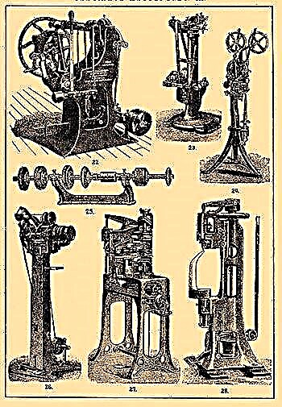
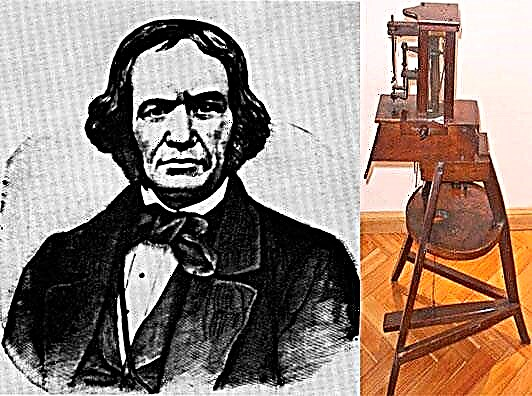
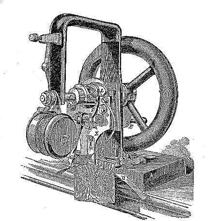

Hozirda ko'plab tadbirlarni tikuv mashinalarini
ishlatmasdan tasavvur qilish mumkin emas - bu ham ulkan ishlab chiqarish uskunasining elementi, ham uyda
foydalanish uchun kichik qurilmalar sifatida. Ammo siz ushbu mexanizm necha yoshda va zamonaviy iste'molchiga
tanish ko'rinishda yetib borguniga qadar qanday o'zgarishlarga duch kelganini hech o'ylab ko'rganmisiz?
U g'or odamlari davridan boshlanib, birinchi navbatda avlga o'xshash suyak ignasi yaratilib, teridan ip
o'tqazilgan teshiklarni ochish uchun ishlatilgan. Keyinchalik ham, oxirgi harakat uchun kanca ishlatilgan.
Va bir necha asr o'tgach, odamlar igna ichida qanday qilib ko'zni yasashni o'rganishdi, u poydevorda
joylashgan edi (oldinga qarab, birinchi igna nuqta yaqinida 1814 yilda Avstriyada Jozef Madersperger
tomonidan ixtiro qilingan va keyinchalik Isaak Singer tomonidan patentlangan).
Tarixchilarning fikriga ko'ra, tikuvchilik mashinasi loyihasining birinchi muallifi, nomi hozirgi kungacha
saqlanib qolgan, XV asrda mashhur Leonardo Da Vinchi bo'lgan. Afsuski, keyinchalik u qog'ozda qoldi,
amalga oshirilmadi.
Ular ushbu ixtiroga yana 1755 yilda qaytib kelishdi, Germaniyada ixtiro aybdor edi Karl Vaysental, qo'lda
tikish usulini nusxa ko'chirgan qurilmani kim patentladi. 35 yildan keyin Angliyada Tomas Sent poyabzal
ishlab chiqarish uchun tikuv mashinasini ixtiro qildi... Shundan so'ng, Frantsiyada Barthelemy Timonier
ushbu mexanizmning o'z versiyasini ishlab chiqdi va birinchi bo'lib avtomatlashtirilgan tikuv fabrikasini
yaratdi. Ammo bularning hech biri ishlatilmadi va Barthelemy fabrikasi raqobatchilardan qo'rqib tikuvchilar
tomonidan yoqib yuborildi.
Va faqat 55 yil o'tib, 19-asrda, amerikalik ixtirochi Ellias Xau haqiqatan ham sifatli kiyim tikish uchun mos
bo'lgan mashinaning modelini ishlab chiqdi, ammo bu hali ham zamonaviy versiyalardan juda uzoq edi. U
daqiqasiga uch yuzga yaqin tikuv tikishga imkon berdi.

Uning paydo bo'lishi tarixi Leonardo Da Vinchidan ancha oldin sodir bo'lgan, XIV asrda, Gollandiyada...
Biroq, uning yaratuvchisi nomi tarixiy hujjatlarda saqlanmagan.
Bu uzun tuvali choyshablarni echishning g'ildirakli mexanizmi edi, bu juda katta va juda ko'p joy egallagan.
Yelkan ustaxonalarida bunday tikuv mashinalarini ko'rish mumkin edi. Bunday birliklarning na tasvirlari va
na tavsiflari bizning vaqtimizgacha saqlanib qolgan, ammo keyinchalik modellar saqlanib qolgan.
Tomas Seynning qurilmasi shunday ko'rinishga ega edi.
Va bu Barthelemy Timonier va uning ixtirosi.
Va nihoyat, bu Elias Xou tomonidan ishlab chiqarilgan birinchi tikuv tikuv mashinasi.
MA'LUMOT.
Xau va Singerdan oldin ularning tikuv mashinalarining yuqori va pastkiManba!
iplardan foydalanadigan prototipini Amerikada Uolter Xant ixtiro qilgan, u ko'plab
patentlar ishsiz qolishidan qo'rqib, patent bermagan.